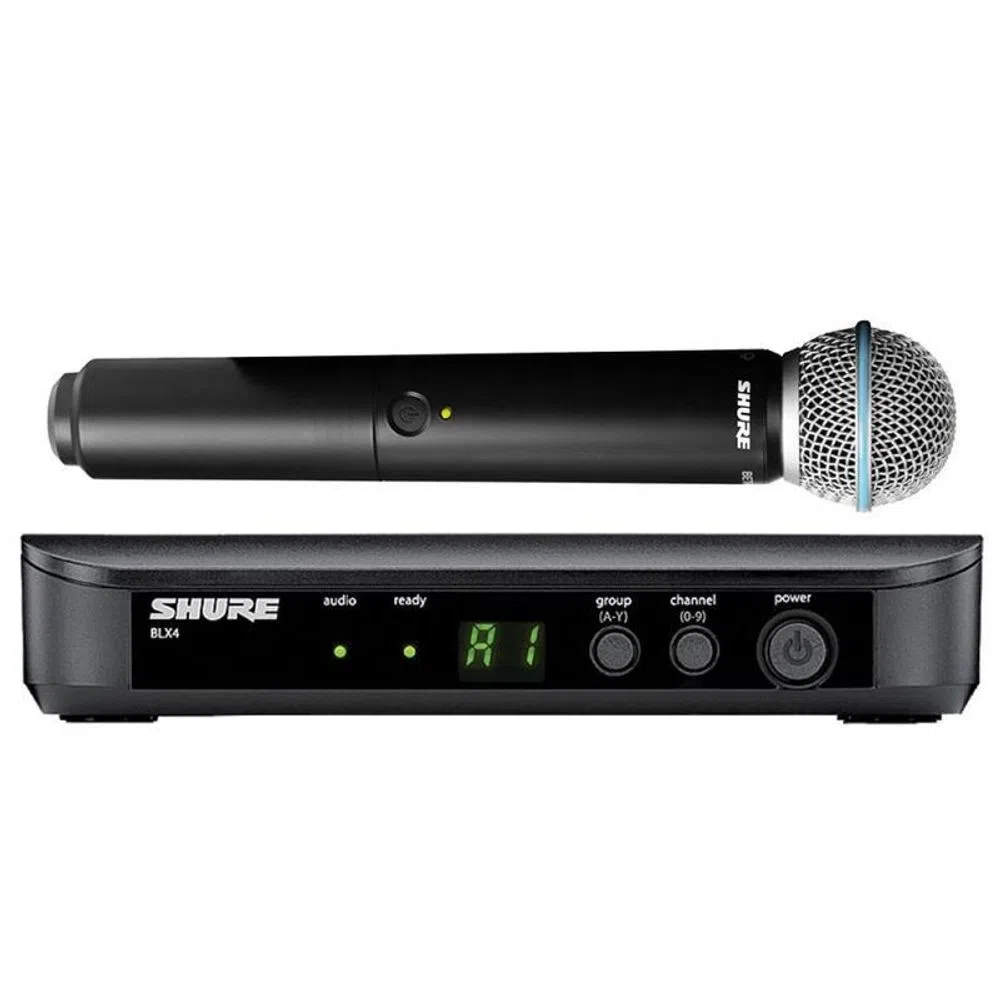
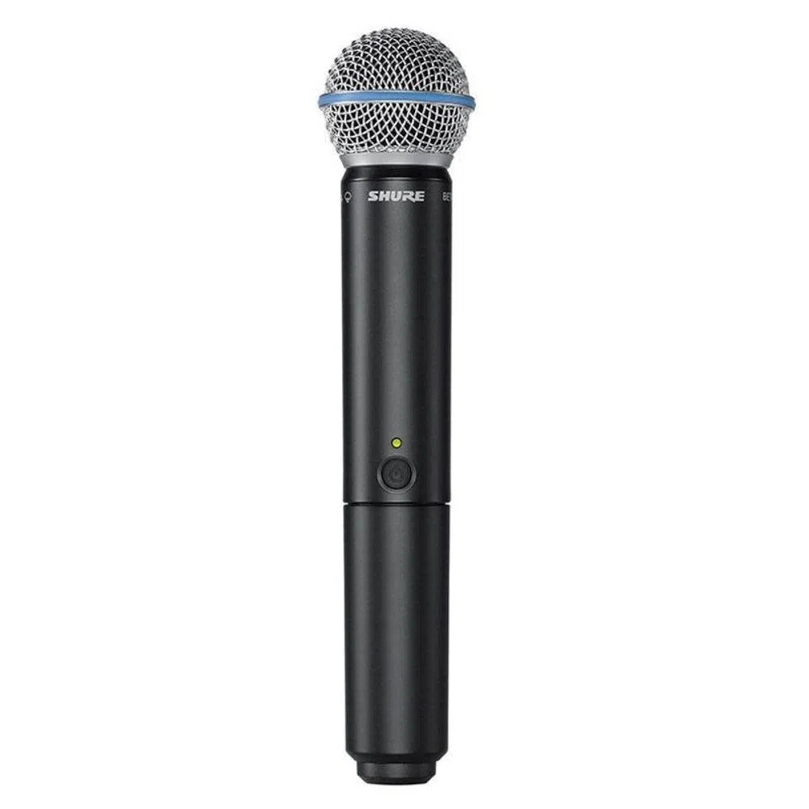
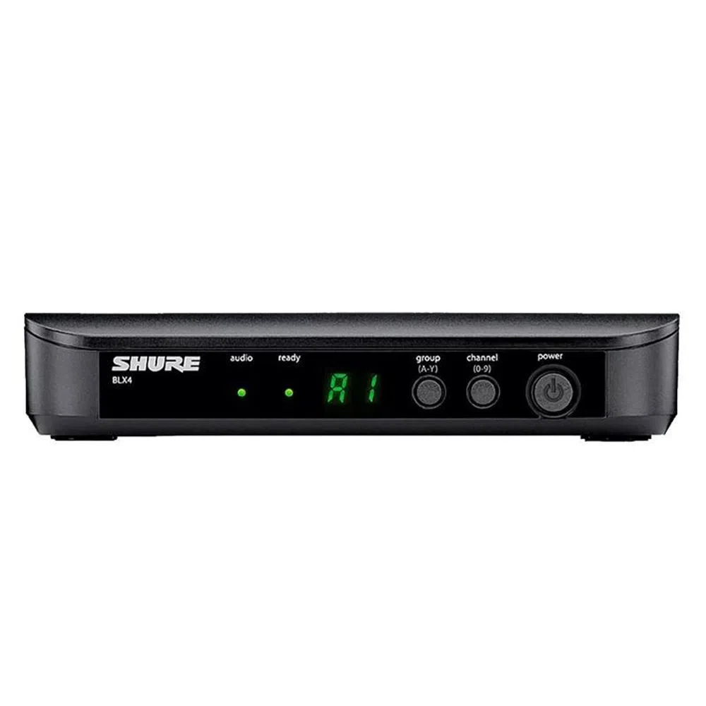
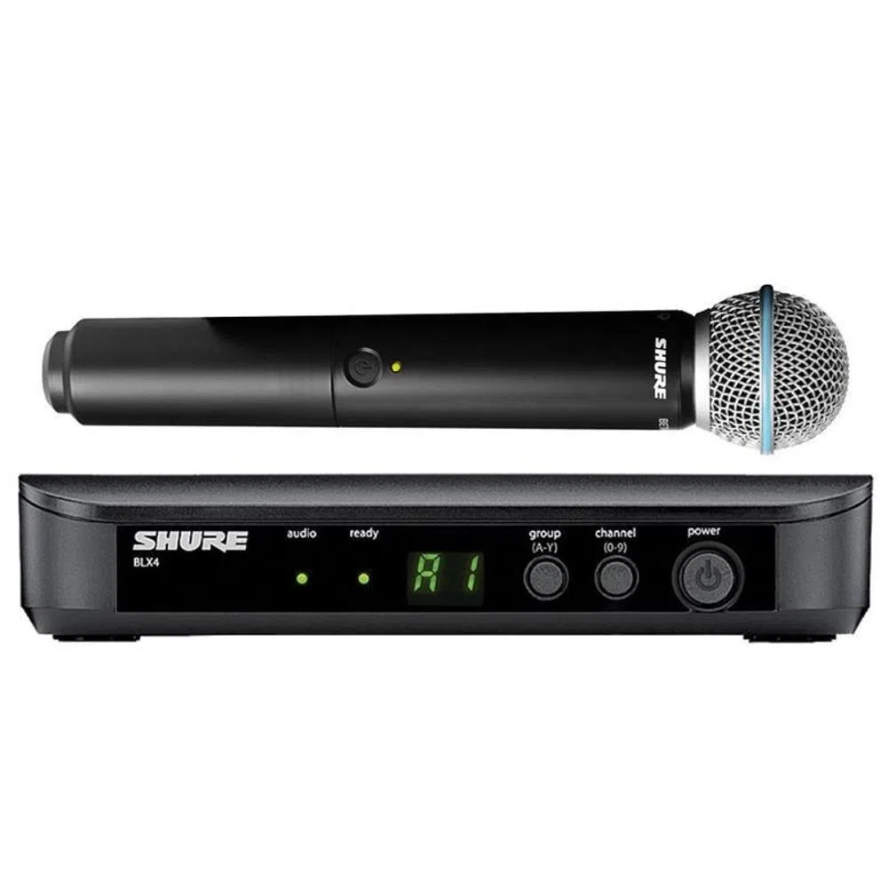
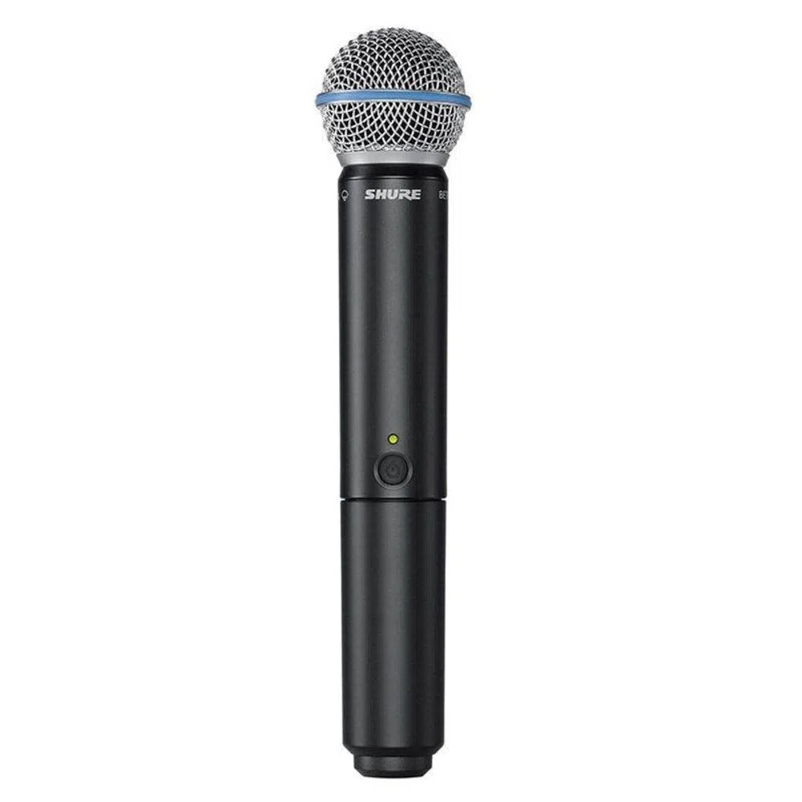
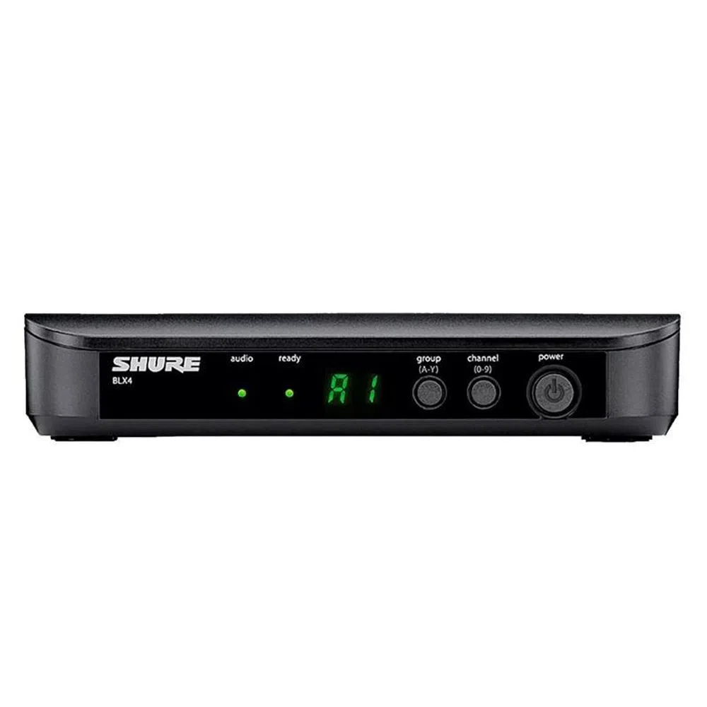

Microfone Sem Fio Shure BLX24BR/Beta58
Sobre
2 bandas homologadas = 24 sistemas compatíveis
12 Sistemas compatíveis por banda, 24MHz de banda,
Escaneamento de frequência em um toque seleciona rapidamente a melhor frequência
Potência de 10mW de transmissão (bodypack e bastão), Até 14h de duração das pilhas (AA),
Alcance de aproximadamente 90m em campo livre. Receptor BLX4 com antenas internas. Transmissor Bastão com cápsula BETA58.
(Acompanha case acolchoado com zíper)
Diversidade de antena interna controladora por microprocessador
Saídas XLR e P10 (1/4”)
LED indicador de status de 2 cores
Informações Adicionais
Imagem Meramente ilustrativa
Acompanha pilha.
Fabricação: China na Fábrica da Shure
R$4.430,00 à vista